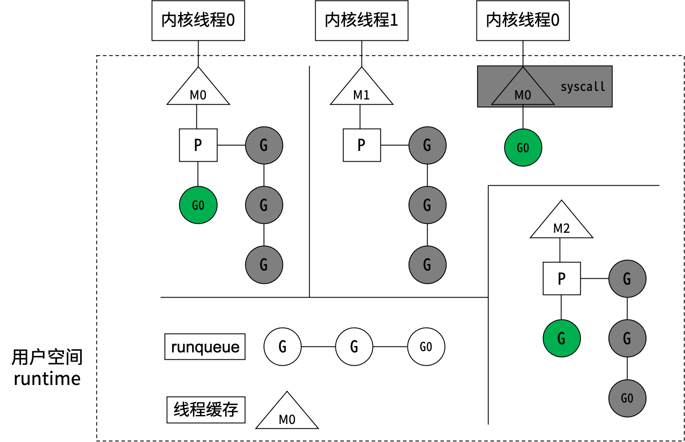

并发模型
任何语言的并行，到操作系统层面，都是内核线程的并行。同一个进程内的多个线程共享系统资源，进程的创建、销毁、切换比线程大很多。从进程到线程再到协程, 其实是一个不断共享, 不断减少切换成本的过程。
协程
线程
创建数量
轻松创建上百万个协程而不会导致系统资源衰竭
通常最多不能超过1万个
内存占用
初始分配4k堆栈，随着程序的执行自动增长删除
创建线程时必须指定堆栈且是固定的，通常以M为单位
切换成本
协程切换只需保存三个寄存器，耗时约200纳秒
线程切换需要保存几十个寄存器，耗时约1000纳秒
调度方式
非抢占式，由Go runtime主动交出控制权（对于开发者而言是抢占式）
在时间片用完后，由 CPU 中断任务强行将其调度走，这时必须保存很多信息
创建销毁
goroutine因为是由Go runtime负责管理的，创建和销毁的消耗非常小，是用户级的
创建和销毁开销巨大，因为要和操作系统打交道，是内核级的，通常解决的办法就是线程池
查看逻辑核心数
1 fmt.Println(runtime.NumCPU())
Go语言的MPG并发模型

Goroutine的使用
启动协程的两种常见方式：
1 2 3 4 5 func Add (a, b int ) int { fmt.Println("Add" ) return a + b } go Add(2 , 4 )
1 2 3 4 go func (a, b int ) int { fmt.Println("add" ) return a + b }(2 , 4 )
优雅地等子协程结束:
1 2 3 4 5 6 7 8 9 wg := sync.WaitGroup{} wg.Add(10 ) for i := 0 ; i < 10 ; i++ { go func (a, b int ) defer wg.Done() }(i, i+1 ) } wg.Wait()
父协程结束后，子协程并不会结束。main协程结束后，所有协程都会结束。
1 2 3 4 5 6 7 8 9 10 11 12 13 14 15 16 17 18 19 20 21 22 23 24 package mainimport ( "fmt" "time" ) func main () arr := []int {1 , 2 , 3 , 4 } for _, v := range arr { go func () fmt.Printf("%d\t" , v) }() } time.Sleep(time.Duration(1 ) * time.Second) fmt.Println() for _, v := range arr { go func (value int ) fmt.Printf("%d\t" , value) }(v) } time.Sleep(time.Duration(1 ) * time.Second) fmt.Println() }
有时候需要确保在高并发的场景下有些事情只执行一次，比如加载配置文件、关闭管道等。
1 2 3 4 5 6 var resource map [string ]string var loadResourceOnce sync.Once func LoadResource () loadResourceOnce.Do(func () resource["1" ] = "A" }) }
单例模式
1 2 3 4 5 6 7 8 9 type Singleton struct {}var singleton *Singletonvar singletonOnce sync.Oncefunc GetSingletonInstance () singletonOnce.Do(func () singleton = &Singleton{} }) return singleton }
何时会发生panic:
运行时错误会导致panic，比如数组越界、除0。
程序主动调用panic(error)。
panic会执行什么：
逆序执行当前goroutine的defer链（recover从这里介入）。
打印错误信息和调用堆栈。
调用exit(2)结束整个进程。
关于defer
defer在函数退出前被调用，注意不是在代码的return语句之前执行，因为return语句不是原子操作。
如果发生panic，则之后注册的defer不会执行。
defer服从先进后出原则，即一个函数里如果注册了多个defer，则按注册的逆序执行。
defer后面可以跟一个匿名函数。
1 2 3 4 5 6 7 8 9 10 11 12 13 14 15 16 17 18 func goo (x int ) int { fmt.Printf("x=%d\n" , x) return x } func foo (a, b int , p bool ) int { c := a*3 + 9 defer fmt.Println("first defer" ) d := c + 5 defer fmt.Println("second defer" ) e := d / b if p { panic (errors.New("my error" )) } defer fmt.Println("third defer" ) return goo(e) }
recover会阻断panic的执行。
1 2 3 4 5 6 7 8 9 func soo (a, b int ) defer func () if err := recover (); err != nil { fmt.Printf("soo函数中发生了panic:%s\n" , err) } }() panic (errors.New("my error" )) }
Channel的同步与异步
很多语言通过共享内存来实现线程间的通信，通过加锁来访问共享数据，如数组、map或结构体。go语言也实现了这种并发模型。
CSP(communicating sequential processes)讲究的是“以通信的方式来共享内存”，在go语言里channel是这种模式的具体实现。
异步管道
1 asynChann := make (chan int , 8 )
channel底层维护一个环形队列（先进先出），make初始化时指定队列的长度。队列满时，写阻塞；队列空时，读阻塞。sendx指向下一次写入的位置， recvx指向下一次读取的位置。 recvq维护因读管道而被阻塞的协程，sendq维护因写管道而被阻塞的协程。
同步管道可以认为队列容量为0，当读协程和写协程同时就绪时它们才会彼此帮对方解除阻塞。
1 syncChann := make (chan int )
channel仅作为协程间同步的工具，不需要传递具体的数据，管道类型可以用struct{}。空结构体变量的内存占用为0，因此struct{}类型的管道比bool类型的管道还要省内存。
1 2 sc := make (chan struct {}) sc <- struct {}{}
关于channel的死锁与阻塞
Channel满了，就阻塞写；Channel空了，就阻塞读。
阻塞之后会交出cpu，去执行其他协程，希望其他协程能帮自己解除阻塞。
如果阻塞发生在main协程里，并且没有其他子协程可以执行，那就可以确定“希望永远等不来”，自已把自己杀掉，报一个fatal error:deadlock出来。
如果阻塞发生在子协程里，就不会发生死锁，因为至少main协程是一个值得等待的“希望”，会一直等（阻塞）下去。
1 2 3 4 5 6 7 8 9 10 11 12 13 14 15 16 17 18 19 20 21 22 23 24 25 26 package mainimport ( "fmt" "time" ) func main () ch := make (chan struct {}, 1 ) ch <- struct {}{} go func () time.Sleep(5 * time.Second) <-ch fmt.Println("sub routine 1 over" ) }() ch <- struct {}{} fmt.Println("send to channel in main routine" ) go func () time.Sleep(2 * time.Second) ch <- struct {}{} fmt.Println("sub routine 2 over" ) }() time.Sleep(3 * time.Second) fmt.Println("main routine exit" ) }
关闭channel
只有当管道关闭时，才能通过range遍历管道里的数据，否则会发生fatal error。
管道关闭后读操作会立即返回，如果缓冲已空会返回“0值”。
ele, ok := <-ch ok==true代表ele是管道里的真实数据。
向已关闭的管道里send数据会发生panic。
不能重复关闭管道，不能关闭值为nil的管道，否则都会panic。
1 2 3 4 5 6 7 8 9 10 11 12 13 14 15 16 17 18 19 20 21 22 23 24 25 26 27 28 29 30 31 32 33 34 35 36 37 38 package mainimport ( "fmt" "time" ) var cloch = make (chan int , 1 )var cloch2 = make (chan int , 1 )func traverseChannel () for ele := range cloch { fmt.Printf("receive %d\n" , ele) } fmt.Println() } func traverseChannel2 () for { if ele, ok := <-cloch2; ok { fmt.Printf("receive %d\n" , ele) } else { fmt.Printf("channel have been closed, receive %d\n" , ele) break } } } func main () cloch <- 1 close (cloch) traverseChannel() fmt.Println("==================" ) go traverseChannel2() cloch2 <- 1 close (cloch2) time.Sleep(10 * time.Millisecond) }
channel在并发编程中有多种玩法，经常用channel来实现协程间的同步。
1 2 3 4 5 6 7 8 9 10 11 12 13 14 15 16 17 18 19 20 21 22 23 24 25 26 27 28 29 30 31 32 33 34 35 36 37 38 39 40 41 42 43 44 45 package mainimport ( "fmt" "time" ) func upstream (ch chan struct {}) time.Sleep(15 * time.Millisecond) fmt.Println("一个上游协程执行结束" ) ch <- struct {}{} } func downstream (ch chan struct {}) <-ch fmt.Println("下游协程开始执行" ) } func main () upstreamNum := 4 downstreamNum := 5 upstreamCh := make (chan struct {}, upstreamNum) downstreamCh := make (chan struct {}, downstreamNum) for i := 0 ; i < upstreamNum; i++ { go upstream(upstreamCh) } for i := 0 ; i < downstreamNum; i++ { go downstream(downstreamCh) } for i := 0 ; i < upstreamNum; i++ { <-upstreamCh } for i := 0 ; i < downstreamNum; i++ { downstreamCh <- struct {}{} } time.Sleep(10 * time.Millisecond) }
并发安全性
多协程并发修改同一块内存，产生资源竞争。go run或go build时添加-race参数检查资源竞争情况。
1 2 func atomic .AddInt32 (addr *int32 , delta int32 ) new int32 )func atomic .LoadInt32 (addr *int32 ) int32 )
把n++封装成原子操作，解除资源竞争，避免脏写。
1 2 3 var lock sync.RWMutex lock.Lock() lock.Unlock() lock.RLock() lock.RUnlock()
任意时刻只可以加一把写锁，且不能加读锁。没加写锁时，可以同时加多把读锁，读锁加上之后不能再加写锁。
1 2 3 4 5 6 7 8 9 10 11 12 13 14 15 16 17 18 19 20 21 22 23 24 25 26 27 28 29 30 31 32 33 34 35 36 37 38 39 40 41 42 43 44 45 46 47 48 49 50 51 52 53 54 55 56 57 58 59 60 61 62 63 64 65 package mainimport ( "fmt" "sync" "sync/atomic" ) var n int32 = 0 var lock sync.RWMutexfunc inc1 () n++ } func inc2 () atomic.AddInt32(&n, 1 ) } func inc3 () lock.Lock() n++ lock.Unlock() } func main () const P = 1000 wg := sync.WaitGroup{} wg.Add(P) for i := 0 ; i < P; i++ { go func () defer wg.Done() inc1() }() } wg.Wait() fmt.Printf("finally n=%d\n" , n) fmt.Println("===========================" ) n = 0 wg = sync.WaitGroup{} wg.Add(P) for i := 0 ; i < P; i++ { go func () defer wg.Done() inc2() }() } wg.Wait() fmt.Printf("finally n=%d\n" , atomic.LoadInt32(&n)) fmt.Println("===========================" ) n = 0 wg = sync.WaitGroup{} wg.Add(P) for i := 0 ; i < P; i++ { go func () defer wg.Done() inc3() }() } wg.Wait() lock.RLock() fmt.Printf("finally n=%d\n" , n) lock.RUnlock() fmt.Println("===========================" ) }
数组、slice、struct允许并发修改（可能会脏写），并发修改map有时会发生panic。如果需要并发修改map请使用sync.Map。
1 2 3 4 5 6 7 8 9 10 11 12 13 14 15 16 17 18 19 20 21 22 23 24 25 26 27 28 29 30 31 32 33 34 35 36 37 38 39 40 41 42 43 44 45 46 47 48 49 50 51 52 53 54 55 56 57 58 package mainimport ( "fmt" "sync" ) type Student struct { Name string Age int32 } var arr = [10 ]int {}var m = sync.Map{}func main () wg := sync.WaitGroup{} wg.Add(2 ) go func () defer wg.Done() for i := 0 ; i < len (arr); i += 2 { arr[i] = 0 } }() go func () defer wg.Done() for i := 1 ; i < len (arr); i += 2 { arr[i] = 1 } }() wg.Wait() fmt.Println(arr) fmt.Println("=======================" ) wg.Add(2 ) var stu Student go func () defer wg.Done() stu.Name = "Fred" }() go func () defer wg.Done() stu.Age = 20 }() wg.Wait() fmt.Printf("%s %d\n" , stu.Name, stu.Age) fmt.Println("=======================" ) wg.Add(2 ) go func () defer wg.Done() m.Store("k1" , "v1" ) }() go func () defer wg.Done() m.Store("k1" , "v2" ) }() wg.Wait() fmt.Println(m.Load("k1" )) }
多路复用
操作系统级的I/O模型有：
阻塞I/O
非阻塞I/O
信号驱动I/O
异步I/O
多路复用I/O
阻塞I/O
非阻塞I/O
read和write默认是阻塞模式。
1 2 ssize_t read (int fd, void *buf, size_t count) ; ssize_t write (int fd, const void *buf, size_t nbytes) ;
通过系统调用fcntl可将文件描述符设置成非阻塞模式。
1 2 int flags = fcntl(fd, F_GETFL, 0 ); fcntl(fd, F_SETFL, flags | O_NONBLOCK);
多路复用I/O
go多路复用函数以netpoll为前缀，针对不同的操作系统做了不同的封装，以达到最优的性能。在编译go语言时会根据目标平台选择特定的分支进行编译。
利用go channel的多路复用实现倒计时发射的demo。
1 2 3 4 5 6 7 8 9 10 11 12 13 14 15 16 17 18 19 20 21 22 23 24 25 26 27 28 29 30 31 32 33 34 35 36 37 38 39 40 41 42 43 44 45 46 47 48 49 50 51 52 53 54 package mainimport ( "fmt" "os" "time" ) func countDown (countCh chan int , n int , finishCh chan struct {}) if n <= 0 { return } ticker := time.NewTicker(1 * time.Second) for { countCh <- n <-ticker.C n-- if n <= 0 { ticker.Stop() finishCh <- struct {}{} break } } } func abort (ch chan struct {}) buffer := make ([]byte , 1 ) os.Stdin.Read(buffer) ch <- struct {}{} } func main () countCh := make (chan int ) finishCh := make (chan struct {}) go countDown(countCh, 10 , finishCh) abortCh := make (chan struct {}) go abort(abortCh) LOOP: for { select { case n := <-countCh: fmt.Println(n) case <-finishCh: fmt.Println("finish" ) break LOOP case <-abortCh: fmt.Println("abort" ) break LOOP } } }
函数超时控制的4种实现。
1 2 3 4 5 6 7 8 9 10 11 12 13 14 15 16 17 18 19 20 21 22 23 24 25 26 27 28 29 30 31 32 33 34 35 36 37 38 39 40 41 42 43 44 45 46 47 48 49 50 51 52 53 54 55 56 57 58 59 60 61 62 63 64 65 66 67 68 69 70 71 72 73 74 75 76 77 78 79 80 81 82 83 84 85 86 87 88 89 90 91 92 93 94 95 96 97 98 99 100 101 102 103 104 105 package mainimport ( "context" "fmt" "time" ) const ( WorkUseTime = 500 * time.Millisecond Timeout = 100 * time.Millisecond ) func LongTimeWork () time.Sleep(WorkUseTime) return } func Handle1 () deadline := make (chan struct {}, 1 ) workDone := make (chan struct {}, 1 ) go func () LongTimeWork() workDone <- struct {}{} }() go func () time.Sleep(Timeout) deadline <- struct {}{} }() select { case <-workDone: fmt.Println("LongTimeWork return" ) case <-deadline: fmt.Println("LongTimeWork timeout" ) } } func Handle2 () workDone := make (chan struct {}, 1 ) go func () LongTimeWork() workDone <- struct {}{} }() select { case <-workDone: fmt.Println("LongTimeWork return" ) case <-time.After(Timeout): fmt.Println("LongTimeWork timeout" ) } } func Handle3 () ctx, cancel := context.WithCancel(context.Background()) workDone := make (chan struct {}, 1 ) go func () LongTimeWork() workDone <- struct {}{} }() go func () time.Sleep(Timeout) cancel() }() select { case <-workDone: fmt.Println("LongTimeWork return" ) case <-ctx.Done(): fmt.Println("LongTimeWork timeout" ) } } func Handle4 () ctx, cancel := context.WithTimeout(context.Background(), Timeout) defer cancel() workDone := make (chan struct {}, 1 ) go func () LongTimeWork() workDone <- struct {}{} }() select { case <-workDone: fmt.Println("LongTimeWork return" ) case <-ctx.Done(): fmt.Println("LongTimeWork timeout" ) } } func main () Handle1() Handle2() Handle3() Handle4() }
协程泄漏
协程阻塞，未能如期结束，导致协程数量不断攀升的现象称为协程泄漏。协程阻塞最常见的原因都跟channel有关。由于每个协程都要占用内存，所以协程泄漏也会导致内存泄漏。
1 2 3 4 5 6 7 8 9 10 11 12 13 14 15 16 17 18 19 20 21 22 23 24 25 26 27 28 29 30 31 32 33 34 35 36 37 38 39 40 41 package mainimport ( "context" "fmt" "runtime" "time" ) func work () time.Sleep(time.Duration(500 ) * time.Millisecond) return } func handle () ctx, cancel := context.WithTimeout(context.Background(), time.Millisecond*100 ) defer cancel() workDone := make (chan struct {}) go func () work() workDone <- struct {}{} }() select { case <-workDone: fmt.Println("LongTimeWork return" ) case <-ctx.Done(): } } func main () for i := 0 ; i < 10 ; i++ { handle() } time.Sleep(2 * time.Second) fmt.Printf("当前协程数：%d\n" , runtime.NumGoroutine()) }
在以上代码中workDone是同步管道，子协程向workDone里send数据时总是会阻塞（如果每次都超时的话），子协程因阻塞而一直不能退出，导致子协程数量不断累积。
1 2 3 4 5 6 7 8 9 10 11 import ( "net/http" _ "net/http/pprof" ) func main () go func () if err := http.ListenAndServe("localhost:8080" , nil ); err != nil { panic (err) } }() }
上述代码在8080端口上开启了监听，那我们在本地把程序跑起来，然后在浏览器上访问127.0.0.1:8080/debug/pprof/goroutine?debug=1。
从截图上我们看到协程数量确实多得超出预期，并且明确提示出源代码第25行导致了内存泄漏。还可以通过go tool pprof定位协程泄漏，在终端运行
1 go tool pprof http://0.0.0.0:8080/debug/pprof/goroutine
注意上面截图中显示生成了一个文件/Users/zhangchaoyang/pprof/pprof.goroutine.001.pb.gz，后面我们会用到它。从截图可以看到main.handle.func1创建的协程最多，通过list命令查看这个函数里到底是哪行代码导致的协程泄漏
也可能通过traces打印调用堆栈，下面截图显示main.handle.func1由于调用了chansend1而阻塞了1132个协程。
在pprof中输入web命令，相当于是traces命令的可视化。
其实终端执行
1 go tool pprof --http=:8081 /Users/zhangchaoyang/pprof/pprof.goroutine.001.pb.gz
在source view下可看到哪行代码生成的协程最多。
协程管理
1 2 3 runtime.GOMAXPROCS(2 ) runtime.Gosched() runtime.NumGoroutine()
通过带缓冲的channel可以实现对goroutine数量的控制。
1 2 3 4 5 6 7 8 9 10 11 12 13 14 15 16 17 18 19 20 21 22 23 24 25 26 27 28 29 30 31 32 33 34 35 36 37 38 39 40 41 42 43 44 45 46 47 48 package mainimport ( "fmt" "runtime" "time" ) type Glimit struct { limit int ch chan struct {} } func NewGlimit (limit int ) return &Glimit{ limit: limit, ch: make (chan struct {}, limit), } } func (g *Glimit) func () g.ch <- struct {}{} go func () f() <-g.ch }() } func main () go func () ticker := time.NewTicker(1 * time.Second) for { <-ticker.C fmt.Printf("当前协程数：%d\n" , runtime.NumGoroutine()) } }() work := func () time.Sleep(100 * time.Millisecond) } glimit := NewGlimit(10 ) for i := 0 ; i < 10000 ; i++ { glimit.Run(work) } time.Sleep(10 * time.Second) }
守护协程：独立于控制终端和用户请求的协程，它一直存在，周期性执行某种任务或等待处理某些发生的事件。伴随着main协程的退出，守护协程也退出。
信号
值
说明
SIGINT
2
Ctrl+C触发
SIGKILL
9
无条件结束程序，不能捕获、阻塞或忽略
SIGTERM
15
结束程序，可以捕获、阻塞或忽略
1 2 3 4 5 type Context interface { Deadline() (deadline time.Time, ok bool ) Done() <-chan struct {} } func WithCancel (parent Context)
当Context的deadline到期或调用了CancelFunc后，Context的Done()管道会关闭，该管道上关联的读操作会解除阻塞，然后执行协程退出前的清理工作。
1 2 3 4 5 6 7 8 9 10 11 12 13 14 15 16 17 18 19 20 21 22 23 24 25 26 27 28 29 30 31 32 33 34 35 36 37 38 39 40 41 42 43 44 45 46 47 48 49 50 51 52 53 54 55 56 57 58 59 60 61 62 63 64 65 66 67 package mainimport ( "context" "fmt" "net/http" "os" "os/signal" "strconv" "sync" "syscall" ) var ( wg sync.WaitGroup ctx context.Context cancle context.CancelFunc ) func init () wg = sync.WaitGroup{} wg.Add(3 ) ctx, cancle = context.WithCancel(context.Background()) } func listenSignal () defer wg.Done() c := make (chan os.Signal) signal.Notify(c, syscall.SIGINT, syscall.SIGTERM) for { select { case <-ctx.Done(): return case sig := <-c: fmt.Printf("got signal %d\n" , sig) cancle() return } } } func listenHttp (port int ) defer wg.Done() server := &http.Server{Addr: ":" + strconv.Itoa(port), Handler: nil } go func () for { select { case <-ctx.Done(): server.Close() return } } }() if err := server.ListenAndServe(); err != nil { fmt.Println(err) } fmt.Printf("stop listen on port %d\n" , port) } func main () go listenSignal() go listenHttp(8080 ) go listenHttp(8081 ) wg.Wait() }
案例
并发读写文件
3个线程三个文件写入channel，1个协程读取写入文件，不要求文件顺序
1 2 3 4 5 6 7 8 9 10 11 12 13 14 15 16 17 18 19 20 21 22 23 24 25 26 27 28 29 30 31 32 33 34 35 36 37 38 39 40 41 42 43 44 45 46 47 48 49 50 51 52 53 54 55 56 57 58 59 60 61 62 63 64 65 66 67 68 69 70 71 72 package mainimport ( "bufio" "io" "log" "os" "strconv" "sync" ) var wg sync.WaitGroupvar lineChan = make (chan string , 10000 )var writeDone = make (chan struct {})func ReadFiles (fileName string ) defer wg.Done() f, err := os.Open(fileName) if err != nil { log.Fatal(err) } defer f.Close() r := bufio.NewReader(f) for { s, err2 := r.ReadString('\n' ) if err2 != nil { if err2 == io.EOF { if len (s) > 0 { s += "\n" lineChan <- s } break } log.Fatal(err2) } lineChan <- s } } func WriteFiles (fileName string ) defer close (writeDone) f, err := os.OpenFile(fileName, os.O_CREATE|os.O_TRUNC|os.O_WRONLY, 0644 ) if err != nil { log.Fatal(err) } defer f.Close() w := bufio.NewWriter(f) for { if line, ok := <-lineChan; ok { w.WriteString(line) } else { break } } w.Flush() } func main () for i := 1 ; i <= 3 ; i++ { wg.Add(1 ) fileName := "dir/" + strconv.Itoa(i) go ReadFiles(fileName) } go WriteFiles("dir/merge" ) wg.Wait() close (lineChan) <-writeDone }